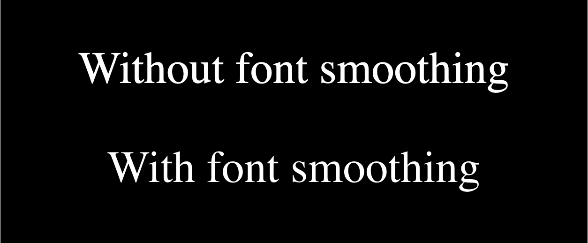

The font-smooth CSS property controls the application of anti-aliasing when fonts are rendered.
/* Keyword values */ font-smooth: auto; font-smooth: never; font-smooth: always; /* <length> value */ font-smooth: 2em;
WebKit implements a similar property, but with different values: -webkit-font-smoothing. It only works on Mac OS X/macOS.
auto - Let the browser decide (Uses subpixel anti-aliasing when available; this is the default)none - Turn font smoothing off; display text with jagged sharp edges.antialiased - Smooth the font on the level of the pixel, as opposed to the subpixel. Switching from subpixel rendering to antialiasing for light text on dark backgrounds makes it look lighter.subpixel-antialiased - On most non-retina displays, this will give the sharpest text.Firefox implements a similar property, but with different values: -moz-osx-font-smoothing. It only works on Mac OS X/macOS.
auto - Allow the browser to select an optimization for font smoothing, typically grayscale.grayscale - Render text with grayscale antialiasing, as opposed to the subpixel. Switching from subpixel rendering to antialiasing for light text on dark backgrounds makes it look lighter.{{cssinfo}}
The following example shows the Safari/Chromium and Firefox equivalents that turn on font-smoothing on macOS. In both cases the smoothed font should look slightly lighter in weight.
For those of you not on a macOS system, here is a screenshot (the live version appears later on):

<p>Without font smoothing</p> <p class="smoothed">With font smoothing</p>
html {
background-color: black;
color: white;
font-size: 3rem;
}
p {
text-align: center;
}
.smoothed {
-webkit-font-smoothing: antialiased;
-moz-osx-font-smoothing: grayscale;
}
{{EmbedLiveSample('Basic_usage_example', '100%', 260)}}
Not part of any standard.
{{Compat}}